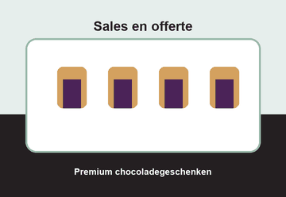
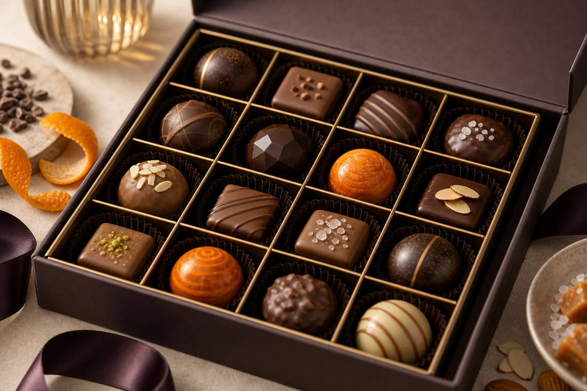

Retail
Schappen, displays en introductiecampagnes voor winkels, conceptstores en delicatessenretail.
B2B opportunities
DutchDelight Chocolates ontwikkelt chocoladeconcepten voor zakelijke klanten die zoeken naar sterke merken, betrouwbare levering en commerciële ondersteuning.
Onze merken zijn geschikt voor retail, horeca, distributeurs, sportlocaties, vendingbedrijven, scholen, bedrijfscatering en cadeauleveranciers.

Schappen, displays en introductiecampagnes voor winkels, conceptstores en delicatessenretail.
Miniatures, koffiepairings en geschenken voor hotels, restaurants, vergaderlocaties en catering.
Pulse-producten voor sportkantines, events, vending, scholen en drukke doorstroomlocaties.
Noiré en TrueCacao voor relatiegeschenken, eindejaarsacties, medewerkerswaardering en cadeaupakketten.
Assortimentsadvies en productinformatie voor distributeurs in Nederland, België, Luxemburg, Duitsland en Oostenrijk.
Chocolate concepts voor kantoor, koffiemomenten, bedrijfscatering en ontvangstomgevingen.
| Assortimentsadvies | Keuzehulp per kanaal, doelgroep, prijspunt en verkoopmoment. |
|---|---|
| Campagnemateriaal | Beeldmateriaal, productteksten, displays en basiscontent voor introducties. |
| Sales support | Offertevoorbereiding, accountinformatie en advies over volumes en presentatie. |
| Betrouwbare levering | Duidelijke afspraken over aantallen, levertijd, verpakking en contactpersoon. |
DutchDelight Chocolates wil de afzet in Europa verder vergroten. Het bedrijf ziet vooral kansen in Zuid-Europa, waar vraag is naar hoogwaardige en onderscheidende chocoladeproducten.
Om deze groei mogelijk te maken, werkt DutchDelight samen met distributeurs die beschikken over een sterk regionaal netwerk en ervaring hebben in het premiumsegment.
Bij marktintroducties besteedt DutchDelight extra aandacht aan commerciële ondersteuning, zoals promotieacties, proeverijen, verkoopmaterialen, productpresentaties op beurzen en presentaties in winkels.

Pulse is ontwikkeld voor zakelijke klanten die chocolade willen aanbieden op plekken waar mensen onderweg zijn, sporten, studeren of snel iets willen meenemen. Het merk past bij sportkantines, scholen, vendinglocaties, tankstations, events, bedrijfsrestaurants en campuslocaties.
De artikelgroepen Pulse Bars, Pulse Bites en Pulse Packs ondersteunen verschillende verkoopmomenten: individuele verkoop, portieverpakkingen, sampling, eventacties en grotere team- of promotieverpakkingen.
Onze salesafdeling helpt zakelijke klanten met merkkeuze, introductie en offerteaanvraag.
Contact opnemen